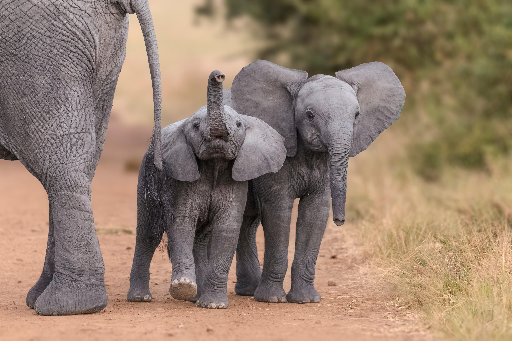

Endagered Species
Why do people have the need to hunt innocent animals for money?

Well it's easy, people are influenced by greed.
An average of 35,000 elephants have their tusks taken away for the
ivory
this is called
poaching.